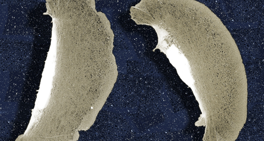

PMI members organize courses and provide research training in muscle, cell motility, and the cytoskeleton through graduate programs in the School of Medicine, the School of Arts and Sciences, and the School of Engineering and Applied Science.
See below to learn more about our courses and research.
Gene Therapy and Neuromuscular Disease
PMI members investigate several muscle-based pathologies, including muscular dystrophy, inherited cardiomyopathies, and other neuromuscular diseases. The goal is to understand the molecular basis of these diseases, allowing for the development of effective therapies. A recent area of research concentration of PMI laboratories is the use of viral-mediated gene transfer to study many aspects of muscle function. The primary application of this tool has been gene therapy for diseases in muscle and other tissues. In this context, missing or mutant genes can be replaced by the introduction and expression of a correct gene. These efforts have focused on the treatment of muscular dystrophy. However, because gene transfer is very efficient in muscle, other studies have utilized skeletal muscle as a "factory" for generating proteins needed elsewhere in the body.
In addition to the therapeutic applications of gene transfer, viral-mediated gene transfer is being used to understand properties of muscle contraction, adaptation, and energetics. By overexpressing both normal and mutant genes in adult muscle, one can perturb the conditions of muscle after development has taken place. These studies include the expression of 1) contractile proteins such as Troponin C, 2) growth factors such as IGF-I and myostatin, and 3) enzymes which can attenuate ischemic-reperfusion injury, such as catalase and arginine kinase.